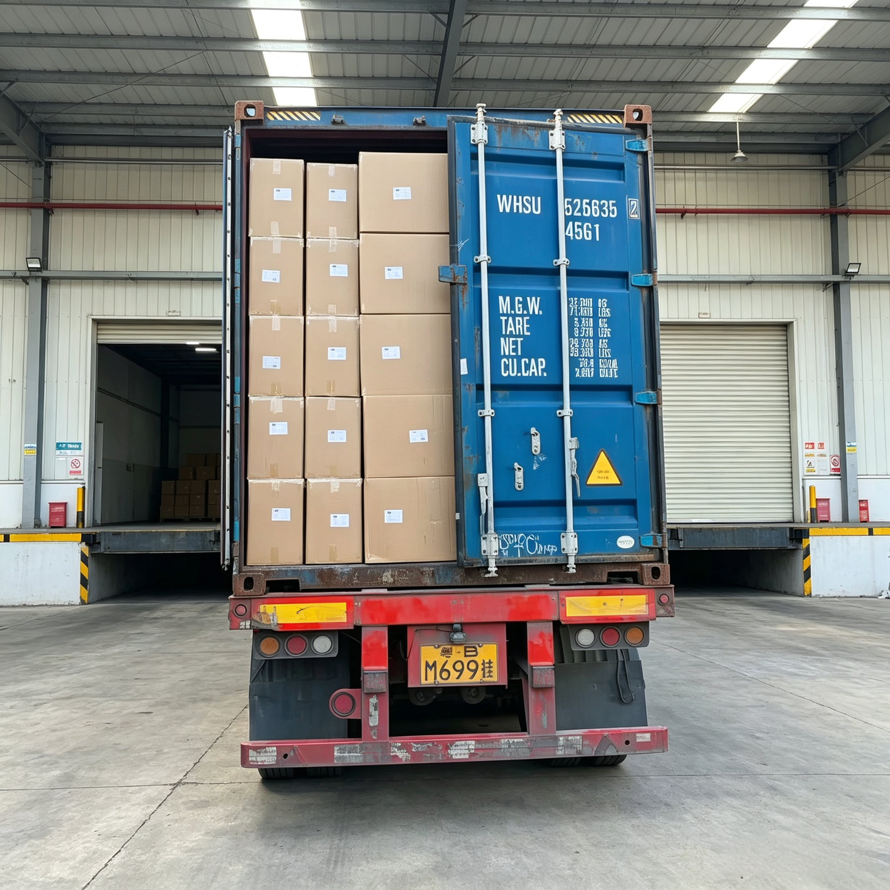

Maximizing Packaging Shelf Life: Warehouse Storage & Barrier Optimization for Export Pouches

For export-oriented food, coffee, pet food, and specialty brands, packaging performance does not end once the pouches are manufactured and filled. Long-distance maritime transit, international transshipments, and extended warehouse storage subject flexible packaging to challenging environmental stressors. High humidity, temperature fluctuations, and oxygen exposure can severely compromise product shelf life if packaging materials and storage conditions are not meticulously optimized.
To protect product freshness and prevent premature spoilage before items reach end consumers, brands must master both high-barrier pouch engineering and intelligent warehouse management.
1. The Environmental Threats to Export Pouch Shelf Life
During cross-border supply chain transit, flexible packaging encounters several relentless environmental factors:
- High Relative Humidity (RH) & Moisture Vapor: Long stays in maritime cargo holds or coastal warehouses expose packages to relentless moisture vapor pressure, risking clumped powders, soggy snacks, or mold growth.
- Ambient Temperature Fluctuations: Cyclic heat expansion and contraction during transport can weaken heat seals and accelerate chemical degradation within oxygen-sensitive products.
- Oxygen Permeation (OTR): Ineffective barrier layers allow atmospheric oxygen to seep in continuously, leading to lipid oxidation, rancidity in oily foods, and the loss of aromatic compounds in specialty coffee.
2. Engineering Superior Barrier Performance
At Shenying Packing, we engineer multi-layer composite structures and mono-material laminates specifically designed to withstand rigorous export logistics:
- High-Barrier Core Options: Utilizing Aluminum Foil (AL), Metallized PET (VMPET), or Ethylene Vinyl Alcohol (EVOH) co-extruded films provides near-zero oxygen and moisture transmission rates (OTR < 0.5 cc/m²/day, WVTR < 0.5 g/m²/day).
- Advanced Seal Integrity: High-performance inner sealant layers (such as mLLDPE) ensure robust, hermetic heat seals that withstand pressure shifts during air or ocean freight.
- Eco-Friendly Barrier Upgrades: Transitioning to high-barrier recyclable mono-material structures (such as barrier PE) ensures full compliance with global environmental regulations without sacrificing shelf-life protection.
3. Best Practices for Warehouse Storage of Flexible Packaging
Proper handling and storage of empty or filled pouches prior to distribution are equally critical for preserving packaging performance:
- Climate-Controlled Storage: Store packaging rolls and finished pouches in cool, dry environments (ideal temperatures between 15°C to 25°C and relative humidity below 60%).
- Elevated Pallet Placement: Always keep packaging stock off concrete floors using pallets to prevent moisture absorption through transit cartons.
- FIFO Inventory Rotation: Implement a strict First-In, First-Out (FIFO) inventory policy to prevent prolonged storage under suboptimal conditions, particularly for functional additive films (like biodegradable or degassing-valve pouches).
Conclusion
Maximizing shelf life is a continuous engineering commitment that spans from material selection in the manufacturing plant to climate control in the export warehouse. By pairing high-barrier packaging structures with rigorous storage protocols, brands can guarantee optimal freshness and safeguard their reputation worldwide.
At Shenying Packing, our BRC-certified team provides custom-engineered, high-barrier flexible packaging designed to endure global supply chains and extend product shelf life.
Need high-barrier packaging that survives long-distance export?
Our BRC-certified team can engineer custom barrier structures and advise on optimal storage protocols for your products.
📧 Email: may.lee@shenyingpacking.com
💬 WhatsApp: +86 13424643780